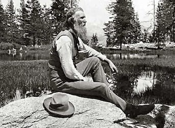
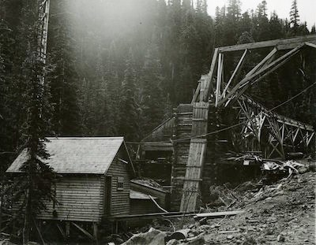
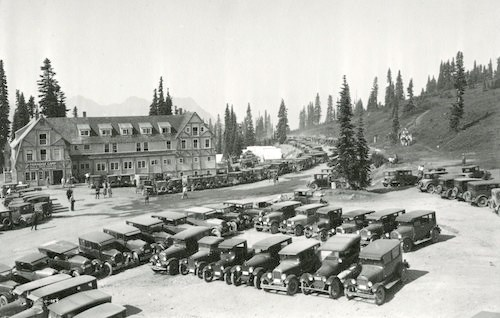

Mount Rainier History
From the American Indian tribes who gathered resources in the area for millennia to the bustling park that exists on the land today, a wide variety of groups have found meaning and importance in the mountain now called Mount Rainier. All of these groups mapped their values on the landscape and contributed to a broader sense of what the area should be. Though these values were often very different and sometimes conflicted, they are all held together today in a delicate balance by the park. The mountain is a product of its past in more than just a geological sense: understanding the human history of Mount Rainier is crucial to realizing the intricacy of the mountain today.
From the American Indian tribes who gathered resources in the area for millennia to the bustling park that exists on the land today, a wide variety of groups have found meaning and importance in the mountain now called Mount Rainier. All of these groups mapped their values on the landscape and contributed to a broader sense of what the area should be. Though these values were often very different and sometimes conflicted, they are all held together today in a delicate balance by the park. The mountain is a product of its past in more than just a geological sense: understanding the human history of Mount Rainier is crucial to realizing the intricacy of the mountain today.
From the American Indian tribes who gathered resources in the area for millennia to the bustling park that exists on the land today, a wide variety of groups have found meaning and importance in the mountain now called Mount Rainier. All of these groups mapped their values on the landscape and contributed to a broader sense of what the area should be. Though these values were often very different and sometimes conflicted, they are all held together today in a delicate balance by the park. The mountain is a product of its past in more than just a geological sense: understanding the human history of Mount Rainier is crucial to realizing the intricacy of the mountain today.
As European explorers began to ‘discover’ the Pacific Northwest in the latter half of the 18th century, they came to a land that was already inhabited by American Indian tribes. In the area around what is today Mount Rainier National Park, the Nisqually, Puyallup, Squaxin Island, Muckleshoot, Yakama, and Cowlitz tribes all used the natural resources surrounding the mountain they called “Takhoma.”
Archaeological evidence traces native use of the area back 9,000 years. For millennia, the ancestors of modern tribes came to the mountain seasonally to hunt and gather resources. Today, those tribes continue to maintain a deep connection to the mountain.
The mountain captivated early European and American visitors. Captain George Vancouver of the British Royal Navy observed the mountain while surveying the Pacific coast in 1792 and decided to name the mountain after his friend, Rear Admiral Peter Rainier. Mountaineers made some of the first non-native incursions on land, eager to summit the iconic peak. P.B. Van Trump and his friend General Hazard Stevens made the first recorded climb of the mountain in 1870 and others would soon follow.
In 1883 James Longmire, on his way down from summiting the mountain, found a mineral spring and opened a hotel and spa there not long after. The entrepreneurial spirit and scenic appreciation for the mountain that drove Longmire would emerge as key themes in the future development of Mount Rainier National Park.
Creation of the park
A wide variety of groups came together to help establish the park in 1899. Scientists, mountaineers, conservation groups, local businesses, and large railroad companies all saw some possible benefit from a national park around Mount Rainier. They combined their often disparate interests into a lobbying campaign starting in 1893. It stressed the potential for tourism from the nearby cities of Seattle and Tacoma, the unsuitability of land for other commercial purposes like agriculture, grazing, or mining, and a need to preserve the unique glacial landscape for further study. After hesitant congressmen received assurances that the park would not come as an added expense to the government, the bill passed in 1899. Mount Rainier became the nation’s fifth national park and the first to be established after the Forest Reserve Act of 1891 that created the U.S. Forest Service. This resolved any questions as to whether the nascent national park and national forest systems would be administered as separate entities with different objectives.
Early Years
Development at the park grew at a torrid and often chaotic pace. Visitation ballooned from 1,786 in 1906 to 34,814 nine years later and park administrators struggled to keep up with the constant demand for more roads, lodging, and other services. The advent of automobiles increased the accessibility of the park but also created new challenges.
Mount Rainier was the first national park to allow cars and by the time a road was built to Paradise Park in 1910, one third of the ranger force was being used for traffic control. Concurrent with the growth in tourist activity was an increased commercial interest in the natural resources of the park. During the first fifteen years of the park’s existence and in the absence of established regulations, mining, water development, and timber schemes sprang up but met with limited success.
1916-1930
The creation of the National Park Service in 1916 brought significant changes to Mount Rainier. A professional ranger force began to take on a greater role in managing the park, including starting interpretive programs in 1921. This early period before the Great Depression was also key for the development of park infrastructure. The Paradise Inn was opened in 1917 and plans to develop Sunrise were crafted throughout the 1920s. Road construction reached its peak with all of the roads in the park being built or surveyed by 1930. These changes stimulated a larger debate that continues to this day over the degree certain areas should be developed or left as primitive wilderness.